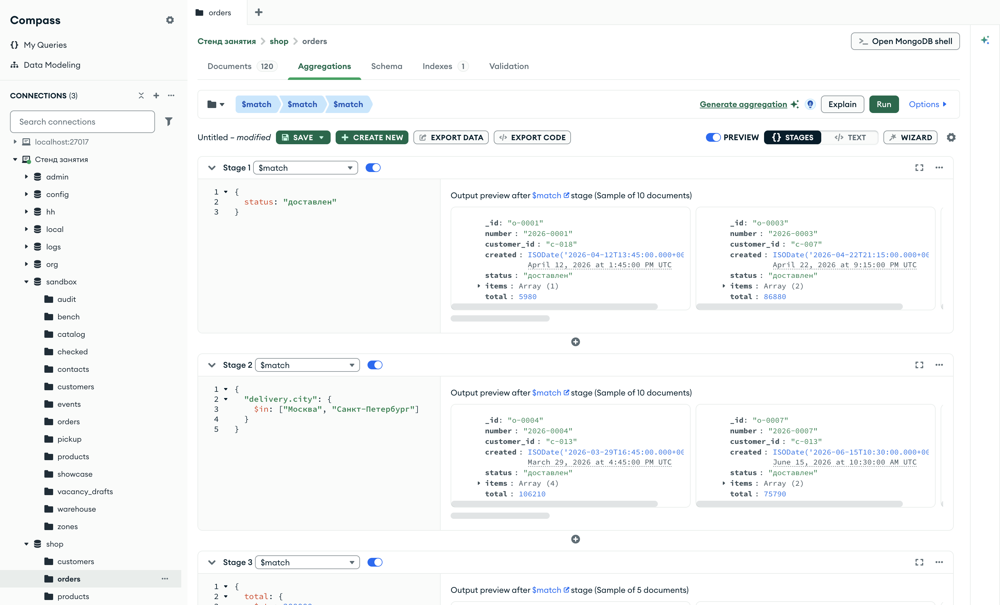
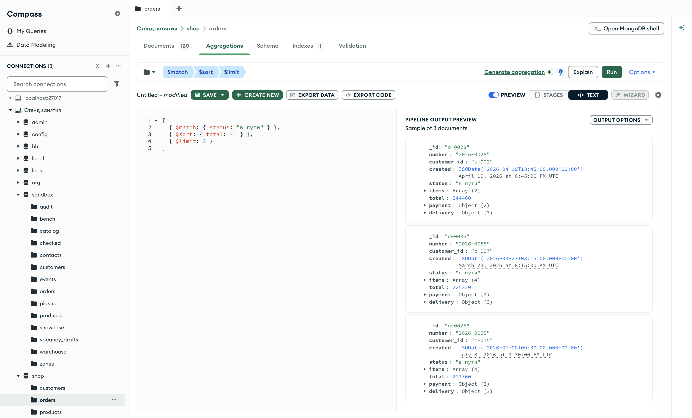

Справочник по MongoDB · модуль 4 · конвейер агрегации
4.1
Конвейер агрегации:
$match, $sort, $limit
В этой главе разобран конвейер агрегации — список стадий, через которые сервер пропускает документы коллекции. Каждая стадия получает документы от предыдущей и передаёт результат следующей. Первая стадия главы — $match, она отбирает документы по условию на языке фильтров модуля 2. Стадии $sort и $limit упорядочивают и обрезают поток, и на них видно, что результат конвейера зависит от порядка стадий.
- Категория
- Агрегация
- Уровень
- Начальный
- Связанные темы
- Фильтр и точечная нотация (глава 2.1), $in (глава 2.3), $elemMatch (глава 2.6), сортировка и предел (глава 1.6)
- Зачем это знать
- Строить запросы, которые сервер выполняет по шагам, и понимать, на каком шаге документ отсеивается
Как запускать примеры этой главы
mongodb-glava-4.1-python.zip, 62 КБmongodb-glava-4.1-ruby.zip, 61 КБmongodb-glava-4.1-go.zip, 67 КБmongodb-glava-4.1-cpp.zip, 66 КБ — все примеры главы готовыми программами, базы и стенд в Docker. В README.md — запуск в Docker, если Compass нет или он не подключается, и на установленном сервере с Compass, а также что должна напечатать каждая программа.lessons/ch4_1.py — пример вставляется в конец файлаlessons/ch4_1.rb — пример вставляется в конец файлаlessons/ch4_1.go — пример внутрь скобок в конце main, функции и типы — выше mainlessons/ch4_1.cpp — пример внутрь скобок в конце main, функции — выше maincd lessons, затем python ch4_1.pycd lessons, затем python3 ch4_1.py · в Docker: docker compose run --rm python lessons/ch4_1.pycd lessons, затем ruby ch4_1.rb · в Docker: docker compose run --rm ruby lessons/ch4_1.rbcd lessons, затем go run ch4_1.go · в Docker: docker compose run --rm go lessons/ch4_1.gocd lessons, затем g++ -std=c++17 ch4_1.cpp -o prog $(pkg-config --cflags --libs libmongocxx1) && ./prog · в Docker: docker compose run --rm cpp lessons/ch4_1.cpp§1Конвейер и стадия
Метод find из модулей 1–2 возвращает документы коллекции в том виде, в каком они записаны: можно выбрать документы по условию, оставить часть полей, упорядочить и ограничить их число. В отчётах нужны вычисления над документами: сложить суммы заказов по городам, посчитать позиции в каждом заказе, разложить заказы по месяцам. Такие вычисления сервер выполняет конвейером агрегации. В этом модуле конвейер собирается по одной стадии за главу, и в этой главе разобрано, как он устроен.
Конвейер похож на ленту сортировочного центра почты. Посылки едут по ленте мимо нескольких постов. Каждый пост выполняет одно действие: первый снимает с ленты посылки не в свой регион, второй откладывает тяжёлые, третий пропускает только первые сто посылок за смену. Пост получает только то, что пропустил предыдущий: посылки, которые сняли раньше, до него не доходят. В конце ленты остаются посылки, прошедшие все посты.
Конвейер агрегации (aggregation pipeline) — список стадий, через которые сервер пропускает документы коллекции. Стадия — один шаг обработки, записанный документом с одним полем: имя поля — оператор стадии, значение — её параметры. Документ {"$match": {"status": "в пути"}} — стадия с оператором $match, её параметр — условие {"status": "в пути"}. Документы коллекции входят в первую стадию, выход каждой стадии становится входом следующей, а выход последней стадии получает программа.
| Сортировочный центр | Конвейер агрегации |
|---|---|
| Посылка | Документ |
| Пост на ленте | Стадия |
| Действие поста: снять, отложить, пропустить первые сто | Оператор стадии: $match, $sort, $limit |
| Порядок постов вдоль ленты | Порядок стадий в списке |
| Посылки в конце ленты | Результат, который получает программа |
Весь конвейер выполняет сервер. Программа отправляет список стадий одной командой aggregate и получает только документы, которые вышли из последней стадии. Промежуточные документы по сети не передаются.
На схеме — конвейер из одной стадии, который разобран в следующем разделе. Числа — из вывода его примера.
{"status": "в пути"}: пропускает подходящие, остальные отбрасываетстадия 1 · выход 13§2Первый конвейер: aggregate и $match
Стадия $match отбирает документы по условию. Условие записывается так же, как фильтр в find: в нём работают точечная нотация, операторы сравнения, списки значений и логические операторы модуля 2. Документ, который подходит под условие, стадия передаёт дальше без изменений. Документ, который не подходит, дальше не идёт.
Конвейер запускает метод коллекции aggregate. Он принимает список стадий и возвращает курсор, как find: документы читаются из него по одному.
В PyMongo конвейер — список словарей, по словарю на стадию. Метод orders.aggregate(pipeline) возвращает курсор.
В драйвере Ruby конвейер — массив хешей, по хешу на стадию. Метод orders.aggregate(pipeline) возвращает объект, который перебирается методом each, как результат find.
В Go конвейер записывается типом mongo.Pipeline — это срез документов bson.D, по документу на стадию. Внутри литерала среза имя типа bson.D у элементов не пишется, поэтому стадия начинается с двойной фигурной скобки: {{Key: "$match", Value: …}}. Метод orders.Aggregate(ctx, pipeline) возвращает курсор и ошибку.
В mongocxx конвейер — объект mongocxx::pipeline. Стадии добавляются в него методами с именами стадий: pipeline.match(…) добавляет стадию $match, параметр — документ условия. Метод orders.aggregate(pipeline) возвращает курсор. Для конвейера нужен заголовок <mongocxx/pipeline.hpp>; в заготовке главы он подключён.
Заказ целиком занимает несколько десятков строк: в нём позиции, оплата, доставка. Чтобы вывод примеров помещался на экран, в заготовке главы объявлена функция show. Она получает курсор и имена полей и печатает у каждого документа значения этих полей в одну строку через « | ». Вложенное поле указывается через точку, как в фильтре: "delivery.city". Последняя строка — сколько документов вернул конвейер. Код функции в примерах не повторяется, он объявлен в заготовке.
from datetime import datetime def show(docs, *fields): """Печатает у каждого документа поля fields в строку через « | »; вложенные — через точку.""" count = 0 for doc in docs: cells = [] for path in fields: value = doc for key in path.split("."): value = value.get(key) if isinstance(value, dict) else None if isinstance(value, datetime): value = value.strftime("%Y-%m-%d %H:%M") if isinstance(value, bool): value = str(value).lower() cells.append("—" if value is None else str(value)) print(" | ".join(cells)) count += 1 print("документов:", count)
#include <ctime> #include <mongocxx/pipeline.hpp> // show — у каждого документа поля fields в строку через « | »; вложенные — через точку. void show(mongocxx::cursor&& cursor, const std::vector<std::string>& fields) { int count = 0; for (auto&& doc : cursor) { std::string line; for (std::size_t i = 0; i < fields.size(); ++i) { bsoncxx::document::view level = doc; bsoncxx::document::element value; std::stringstream path(fields[i]); std::string key; while (std::getline(path, key, '.')) { value = level[key]; if (!value) break; if (value.type() == bsoncxx::type::k_document) level = value.get_document().value; } std::string cell = "—"; if (value) { switch (value.type()) { case bsoncxx::type::k_string: cell = std::string(value.get_string().value); break; case bsoncxx::type::k_int32: cell = std::to_string(value.get_int32().value); break; case bsoncxx::type::k_int64: cell = std::to_string(value.get_int64().value); break; case bsoncxx::type::k_double: { std::ostringstream out; out << value.get_double().value; cell = out.str(); break; } case bsoncxx::type::k_bool: cell = value.get_bool().value ? "true" : "false"; break; case bsoncxx::type::k_date: { std::time_t t = value.get_date().to_int64() / 1000; std::ostringstream out; out << std::put_time(std::gmtime(&t), "%Y-%m-%d %H:%M"); cell = out.str(); break; } case bsoncxx::type::k_null: break; default: cell = "{…}"; } } line += (i ? " | " : "") + cell; } std::cout << line << std::endl; ++count; } std::cout << "документов: " << count << std::endl; }
// show — у каждого документа поля fields в строку через « | »; вложенные — через точку. func show(cursor *mongo.Cursor, fields ...string) { ctx := context.Background() count := 0 for cursor.Next(ctx) { cells := make([]string, len(fields)) for i, path := range fields { value, err := cursor.Current.LookupErr(strings.Split(path, ".")...) switch { case err != nil || value.Type == bson.TypeNull: cells[i] = "—" case value.Type == bson.TypeString: cells[i] = value.StringValue() case value.Type == bson.TypeInt32: cells[i] = fmt.Sprint(value.Int32()) case value.Type == bson.TypeInt64: cells[i] = fmt.Sprint(value.Int64()) case value.Type == bson.TypeDouble: cells[i] = fmt.Sprint(value.Double()) case value.Type == bson.TypeBoolean: cells[i] = fmt.Sprint(value.Boolean()) case value.Type == bson.TypeDateTime: cells[i] = value.Time().UTC().Format("2006-01-02 15:04") default: cells[i] = value.String() } } fmt.Println(strings.Join(cells, " | ")) count++ } fmt.Println("документов:", count) }
# Печатает у каждого документа поля fields в строку через « | »; вложенные — через точку. def show(docs, *fields) count = 0 docs.each do |doc| cells = fields.map do |path| value = path.split(".").reduce(doc) { |v, key| v.is_a?(Hash) ? v[key] : nil } value = value.utc.strftime("%Y-%m-%d %H:%M") if value.is_a?(Time) value.nil? ? "—" : value.to_s end puts cells.join(" | ") count += 1 end puts "документов: #{count}" end
Пример строит конвейер из одной стадии $match — заказы в пути, — печатает результат функцией show и для сравнения считает те же заказы методом count_documents с тем же фильтром.
pipeline = [
{"$match": {"status": "в пути"}},
]
show(orders.aggregate(pipeline), "number", "status", "delivery.city", "total")
print("find с тем же фильтром:", orders.count_documents({"status": "в пути"}))
mongocxx::pipeline pipeline; pipeline.match(make_document(kvp("status", "в пути"))); show(orders.aggregate(pipeline), {"number", "status", "delivery.city", "total"}); std::cout << "find с тем же фильтром: " << orders.count_documents(make_document(kvp("status", "в пути"))) << std::endl;
pipeline := mongo.Pipeline{
{{Key: "$match", Value: bson.D{{Key: "status", Value: "в пути"}}}},
}
cursor, _ := orders.Aggregate(ctx, pipeline)
show(cursor, "number", "status", "delivery.city", "total")
n, _ := orders.CountDocuments(ctx, bson.D{{Key: "status", Value: "в пути"}})
fmt.Println("find с тем же фильтром:", n)
pipeline = [
{ "$match" => { "status" => "в пути" } },
]
show(orders.aggregate(pipeline), "number", "status", "delivery.city", "total")
puts "find с тем же фильтром: " + orders.count_documents({ "status" => "в пути" }).to_s
2026-0023 | в пути | Москва | 8490 2026-0025 | в пути | Екатеринбург | 211760 2026-0027 | в пути | Екатеринбург | 191970 2026-0028 | в пути | Екатеринбург | 244460 2026-0033 | в пути | Ярославль | 9180 2026-0043 | в пути | Екатеринбург | 56370 2026-0054 | в пути | Ярославль | 55360 2026-0055 | в пути | Новосибирск | 98970 2026-0056 | в пути | Новосибирск | 6790 2026-0081 | в пути | Ярославль | 150470 2026-0085 | в пути | Новосибирск | 225320 2026-0088 | в пути | Новосибирск | 126370 2026-0119 | в пути | Новосибирск | 182250 документов: 13 find с тем же фильтром: 13
2026-0023 | в пути | Москва | 8490 2026-0025 | в пути | Екатеринбург | 211760 2026-0027 | в пути | Екатеринбург | 191970 2026-0028 | в пути | Екатеринбург | 244460 2026-0033 | в пути | Ярославль | 9180 2026-0043 | в пути | Екатеринбург | 56370 2026-0054 | в пути | Ярославль | 55360 2026-0055 | в пути | Новосибирск | 98970 2026-0056 | в пути | Новосибирск | 6790 2026-0081 | в пути | Ярославль | 150470 2026-0085 | в пути | Новосибирск | 225320 2026-0088 | в пути | Новосибирск | 126370 2026-0119 | в пути | Новосибирск | 182250 документов: 13 find с тем же фильтром: 13
2026-0023 | в пути | Москва | 8490 2026-0025 | в пути | Екатеринбург | 211760 2026-0027 | в пути | Екатеринбург | 191970 2026-0028 | в пути | Екатеринбург | 244460 2026-0033 | в пути | Ярославль | 9180 2026-0043 | в пути | Екатеринбург | 56370 2026-0054 | в пути | Ярославль | 55360 2026-0055 | в пути | Новосибирск | 98970 2026-0056 | в пути | Новосибирск | 6790 2026-0081 | в пути | Ярославль | 150470 2026-0085 | в пути | Новосибирск | 225320 2026-0088 | в пути | Новосибирск | 126370 2026-0119 | в пути | Новосибирск | 182250 документов: 13 find с тем же фильтром: 13
2026-0023 | в пути | Москва | 8490 2026-0025 | в пути | Екатеринбург | 211760 2026-0027 | в пути | Екатеринбург | 191970 2026-0028 | в пути | Екатеринбург | 244460 2026-0033 | в пути | Ярославль | 9180 2026-0043 | в пути | Екатеринбург | 56370 2026-0054 | в пути | Ярославль | 55360 2026-0055 | в пути | Новосибирск | 98970 2026-0056 | в пути | Новосибирск | 6790 2026-0081 | в пути | Ярославль | 150470 2026-0085 | в пути | Новосибирск | 225320 2026-0088 | в пути | Новосибирск | 126370 2026-0119 | в пути | Новосибирск | 182250 документов: 13 find с тем же фильтром: 13
Конвейер вернул 13 заказов, столько же находит фильтр в count_documents. Конвейер из одной стадии $match даёт тот же результат, что find с этим условием: сервер проверяет условие у каждого заказа и передаёт дальше подходящие. Порядок документов — порядок, в котором они лежат в коллекции: сортировки в конвейере нет.
§3Документы от стадии к стадии
В конвейере может быть несколько стадий, и следующая стадия получает только документы, которые пропустила предыдущая. Это видно, если запустить конвейер по частям: сначала только первую стадию, затем первые две, затем все три — и после каждого запуска посчитать документы.
Пример строит конвейер из трёх стадий $match: доставленные заказы, затем из них — доставленные в Москву или Санкт-Петербург, затем из них — на сумму от 200 000. Цикл запускает начало конвейера длиной 1, 2 и 3 стадии и печатает, сколько документов вышло.
Срез списка stages[:i] — первые i стадий; его и получает aggregate на каждом шаге цикла. Функция len(list(…)) читает курсор до конца и считает документы.
Метод stages.first(i) возвращает первые i стадий массива. to_a.size читает результат до конца и считает документы.
Срез stages[:i] — первые i стадий; у него тот же тип mongo.Pipeline. Метод курсора All читает все документы в срез docs, и len(docs) — их число.
Объект mongocxx::pipeline нельзя обрезать, поэтому стадии сначала собираются в вектор документов, а на каждом шаге цикла из первых i документов собирается новый конвейер методом append_stage. Он добавляет стадию, записанную документом целиком: {"$match": {…}}. Число документов в курсоре считает std::distance от начала до конца курсора.
stages = [
{"$match": {"status": "доставлен"}},
{"$match": {"delivery.city": {"$in": ["Москва", "Санкт-Петербург"]}}},
{"$match": {"total": {"$gte": 200000}}},
]
print("на входе:", orders.count_documents({}))
for i in range(1, len(stages) + 1):
count = len(list(orders.aggregate(stages[:i])))
print(f"после стадии {i}:", count)
show(orders.aggregate(stages), "number", "status", "delivery.city", "total")
std::vector<bsoncxx::document::value> stages; stages.push_back(make_document(kvp("$match", make_document(kvp("status", "доставлен"))))); stages.push_back(make_document( kvp("$match", make_document( kvp("delivery.city", make_document(kvp("$in", make_array("Москва", "Санкт-Петербург")))))))); stages.push_back(make_document( kvp("$match", make_document(kvp("total", make_document(kvp("$gte", 200000))))))); std::cout << "на входе: " << orders.count_documents({}) << std::endl; for (std::size_t i = 1; i <= stages.size(); ++i) { mongocxx::pipeline pipeline; for (std::size_t j = 0; j < i; ++j) pipeline.append_stage(stages[j].view()); auto cursor = orders.aggregate(pipeline); std::cout << "после стадии " << i << ": " << std::distance(cursor.begin(), cursor.end()) << std::endl; } mongocxx::pipeline pipeline; for (auto& stage : stages) pipeline.append_stage(stage.view()); show(orders.aggregate(pipeline), {"number", "status", "delivery.city", "total"});
stages := mongo.Pipeline{
{{Key: "$match", Value: bson.D{{Key: "status", Value: "доставлен"}}}},
{{Key: "$match", Value: bson.D{
{Key: "delivery.city", Value: bson.D{
{Key: "$in", Value: bson.A{"Москва", "Санкт-Петербург"}}}}}}},
{{Key: "$match", Value: bson.D{{Key: "total", Value: bson.D{{Key: "$gte", Value: 200000}}}}}},
}
total, _ := orders.CountDocuments(ctx, bson.D{})
fmt.Println("на входе:", total)
for i := 1; i <= len(stages); i++ {
cursor, _ := orders.Aggregate(ctx, stages[:i])
var docs []bson.D
cursor.All(ctx, &docs)
fmt.Printf("после стадии %d: %d\n", i, len(docs))
}
cursor, _ := orders.Aggregate(ctx, stages)
show(cursor, "number", "status", "delivery.city", "total")
stages = [
{ "$match" => { "status" => "доставлен" } },
{ "$match" => { "delivery.city" => { "$in" => ["Москва", "Санкт-Петербург"] } } },
{ "$match" => { "total" => { "$gte" => 200000 } } },
]
puts "на входе: #{orders.count_documents({})}"
(1..stages.size).each do |i|
count = orders.aggregate(stages.first(i)).to_a.size
puts "после стадии #{i}: #{count}"
end
show(orders.aggregate(stages), "number", "status", "delivery.city", "total")
на входе: 120 после стадии 1: 69 после стадии 2: 22 после стадии 3: 5 2026-0009 | доставлен | Санкт-Петербург | 320740 2026-0024 | доставлен | Санкт-Петербург | 274960 2026-0029 | доставлен | Москва | 289360 2026-0049 | доставлен | Москва | 231260 2026-0110 | доставлен | Москва | 235930 документов: 5
на входе: 120 после стадии 1: 69 после стадии 2: 22 после стадии 3: 5 2026-0009 | доставлен | Санкт-Петербург | 320740 2026-0024 | доставлен | Санкт-Петербург | 274960 2026-0029 | доставлен | Москва | 289360 2026-0049 | доставлен | Москва | 231260 2026-0110 | доставлен | Москва | 235930 документов: 5
на входе: 120 после стадии 1: 69 после стадии 2: 22 после стадии 3: 5 2026-0009 | доставлен | Санкт-Петербург | 320740 2026-0024 | доставлен | Санкт-Петербург | 274960 2026-0029 | доставлен | Москва | 289360 2026-0049 | доставлен | Москва | 231260 2026-0110 | доставлен | Москва | 235930 документов: 5
на входе: 120 после стадии 1: 69 после стадии 2: 22 после стадии 3: 5 2026-0009 | доставлен | Санкт-Петербург | 320740 2026-0024 | доставлен | Санкт-Петербург | 274960 2026-0029 | доставлен | Москва | 289360 2026-0049 | доставлен | Москва | 231260 2026-0110 | доставлен | Москва | 235930 документов: 5
На вход конвейера поступили все 120 заказов. Первая стадия пропустила 69 доставленных. Вторая получила эти 69 и пропустила 22 из Москвы и Санкт-Петербурга. Третья получила 22 и пропустила 5 заказов на сумму от 200 000. Остальные заказы третья стадия не проверяла: до неё они не дошли.
Каждая полоса — выход стадии, длина пропорциональна числу документов. Полоса стадии не может быть длиннее полосы над ней: $match только отбрасывает документы и новых не создаёт.
Три стадии $match подряд дают тот же результат, что одна стадия с тремя условиями: документ доходит до конца, только если подходит под все три. Перед выполнением сервер соединяет соседние стадии $match в одну. В примере стадии разделены, чтобы был виден путь документов. В рабочем конвейере условия одного шага записывают в одну стадию.
§4Условия внутри $match
Условие стадии $match — фильтр модуля 2 без изменений. Точечная нотация обращается к вложенным полям (глава 2.1), $in задаёт список допустимых значений (глава 2.3), $elemMatch требует, чтобы оба условия выполнялись у одного элемента массива (глава 2.6). Несколько полей в одном документе условия соединяются по «и».
Пример ищет заказы, которые ещё не доставлены (собираются или в пути), оплачены заранее — картой или через СБП, — и в которых есть позиция со смартфонами в количестве от двух штук.
pipeline = [
{"$match": {
"status": {"$in": ["собирается", "в пути"]},
"payment.method": {"$in": ["карта", "СБП"]},
"items": {"$elemMatch": {"category": "смартфоны", "qty": {"$gte": 2}}},
}},
]
show(orders.aggregate(pipeline), "number", "status", "payment.method", "total")
mongocxx::pipeline pipeline; pipeline.match(make_document( kvp("status", make_document(kvp("$in", make_array("собирается", "в пути")))), kvp("payment.method", make_document(kvp("$in", make_array("карта", "СБП")))), kvp("items", make_document( kvp("$elemMatch", make_document( kvp("category", "смартфоны"), kvp("qty", make_document(kvp("$gte", 2))))))))); show(orders.aggregate(pipeline), {"number", "status", "payment.method", "total"});
pipeline := mongo.Pipeline{
{{Key: "$match", Value: bson.D{
{Key: "status", Value: bson.D{{Key: "$in", Value: bson.A{"собирается", "в пути"}}}},
{Key: "payment.method", Value: bson.D{{Key: "$in", Value: bson.A{"карта", "СБП"}}}},
{Key: "items", Value: bson.D{
{Key: "$elemMatch", Value: bson.D{
{Key: "category", Value: "смартфоны"},
{Key: "qty", Value: bson.D{{Key: "$gte", Value: 2}}}}}}}}}},
}
cursor, _ := orders.Aggregate(ctx, pipeline)
show(cursor, "number", "status", "payment.method", "total")
pipeline = [
{ "$match" => {
"status" => { "$in" => ["собирается", "в пути"] },
"payment.method" => { "$in" => ["карта", "СБП"] },
"items" => { "$elemMatch" => { "category" => "смартфоны", "qty" => { "$gte" => 2 } } },
} },
]
show(orders.aggregate(pipeline), "number", "status", "payment.method", "total")
2026-0074 | собирается | СБП | 243000 2026-0085 | в пути | карта | 225320 2026-0094 | собирается | карта | 255450 2026-0104 | собирается | карта | 206940 2026-0119 | в пути | карта | 182250 2026-0120 | собирается | карта | 457930 документов: 6
2026-0074 | собирается | СБП | 243000 2026-0085 | в пути | карта | 225320 2026-0094 | собирается | карта | 255450 2026-0104 | собирается | карта | 206940 2026-0119 | в пути | карта | 182250 2026-0120 | собирается | карта | 457930 документов: 6
2026-0074 | собирается | СБП | 243000 2026-0085 | в пути | карта | 225320 2026-0094 | собирается | карта | 255450 2026-0104 | собирается | карта | 206940 2026-0119 | в пути | карта | 182250 2026-0120 | собирается | карта | 457930 документов: 6
2026-0074 | собирается | СБП | 243000 2026-0085 | в пути | карта | 225320 2026-0094 | собирается | карта | 255450 2026-0104 | собирается | карта | 206940 2026-0119 | в пути | карта | 182250 2026-0120 | собирается | карта | 457930 документов: 6
Подходят шесть заказов. На схеме — как условие проверяет один из них, заказ 2026-0074. Каждое поле условия сравнивается со своим полем документа, и документ проходит стадию, только если совпали все три.
- status: "собирается"
- payment.method: "СБП"
- items[0]: смартфоны, qty 3
- items[1]: смартфоны, qty 3
- items[2]: смартфоны, qty 3
- items[3]: комплектующие, qty 1
- total: 243000
- status $in ["собирается", "в пути"]
- payment.method $in ["карта", "СБП"]
- items $elemMatch: смартфоны и qty ≥ 2
- —
- —
- —
- поле в условии не участвует
Зелёные строки — поля, которые проверяет условие, и элемент массива, на котором выполнилось $elemMatch. Для $elemMatch достаточно одного подходящего элемента: первая позиция — смартфоны, три штуки.
Строки вывода напечатаны функцией show в порядке полей, переданных ей: номер, статус, способ оплаты, сумма. Поле payment.method лежит внутри вложенного документа payment, и show находит его по пути через точку так же, как условие $match.
§5Стадии $sort и $limit
Стадия $sort упорядочивает документы, которые к ней пришли. Параметр записывается так же, как в методе sort из главы 1.6: имя поля и направление, 1 — по возрастанию, -1 — по убыванию. Стадия $limit пропускает первые N документов и отбрасывает остальные; параметр — число. В сортировочном центре это пост, который пропускает первые сто посылок за смену.
У find сортировка и предел — параметры одного запроса, и сервер применяет их в фиксированном порядке: сначала отбор, затем сортировка, затем предел. В конвейере это три отдельные стадии, и порядок задаёт список. Пример находит три самых дорогих заказа в пути: отбор, затем сортировка по сумме по убыванию, затем предел.
У стадий $sort и $limit в mongocxx::pipeline есть свои методы: sort принимает документ сортировки, limit — число.
pipeline = [
{"$match": {"status": "в пути"}},
{"$sort": {"total": -1}},
{"$limit": 3},
]
show(orders.aggregate(pipeline), "number", "status", "delivery.city", "total")
mongocxx::pipeline pipeline; pipeline.match(make_document(kvp("status", "в пути"))); pipeline.sort(make_document(kvp("total", -1))); pipeline.limit(3); show(orders.aggregate(pipeline), {"number", "status", "delivery.city", "total"});
pipeline := mongo.Pipeline{
{{Key: "$match", Value: bson.D{{Key: "status", Value: "в пути"}}}},
{{Key: "$sort", Value: bson.D{{Key: "total", Value: -1}}}},
{{Key: "$limit", Value: 3}},
}
cursor, _ := orders.Aggregate(ctx, pipeline)
show(cursor, "number", "status", "delivery.city", "total")
pipeline = [
{ "$match" => { "status" => "в пути" } },
{ "$sort" => { "total" => -1 } },
{ "$limit" => 3 },
]
show(orders.aggregate(pipeline), "number", "status", "delivery.city", "total")
2026-0028 | в пути | Екатеринбург | 244460 2026-0085 | в пути | Новосибирск | 225320 2026-0025 | в пути | Екатеринбург | 211760 документов: 3
2026-0028 | в пути | Екатеринбург | 244460 2026-0085 | в пути | Новосибирск | 225320 2026-0025 | в пути | Екатеринбург | 211760 документов: 3
2026-0028 | в пути | Екатеринбург | 244460 2026-0085 | в пути | Новосибирск | 225320 2026-0025 | в пути | Екатеринбург | 211760 документов: 3
2026-0028 | в пути | Екатеринбург | 244460 2026-0085 | в пути | Новосибирск | 225320 2026-0025 | в пути | Екатеринбург | 211760 документов: 3
На схеме — 13 заказов в пути после стадии $sort, от самого дорогого к самому дешёвому. Стадия $limit пропускает первые три.
- 2026-0028 · 244460
- 2026-0085 · 225320
- 2026-0025 · 211760
- 2026-0027 · 191970
- 2026-0119 · 182250
- 2026-0081 · 150470
- 2026-0088 · 126370
- 2026-0055 · 98970
- 2026-0043 · 56370
- 2026-0054 · 55360
- 2026-0033 · 9180
- 2026-0023 · 8490
- 2026-0056 · 6790
- 2026-0028 · 244460
- 2026-0085 · 225320
- 2026-0025 · 211760
Стадия $sort меняет порядок документов, их число остаётся прежним: на входе и на выходе по 13. $limit выбирает документы по месту в потоке, значения полей на выбор не влияют.
Поскольку $limit берёт документы по месту в потоке, перед ней почти всегда стоит $sort. Без сортировки первыми окажутся документы в порядке хранения, и предел выберет их по этому порядку.
§6Порядок стадий
Стадия получает только то, что пропустили стадии перед ней. Поэтому одни и те же стадии в разном порядке решают разные задачи. На сортировочной ленте пост «первые сто посылок за смену», поставленный до поста «только свой регион», пропустит сто посылок, а из них в свой регион пойдёт лишь часть. Поставленный после — пропустит сто посылок своего региона.
Пример выполняет две пары стадий над заказами. Первый конвейер берёт пять последних заказов магазина и из них оставляет доставленные. Второй сначала отбирает доставленные заказы, а из них берёт пять последних.
last_first = [
{"$sort": {"created": -1}},
{"$limit": 5},
{"$match": {"status": "доставлен"}},
]
match_first = [
{"$match": {"status": "доставлен"}},
{"$sort": {"created": -1}},
{"$limit": 5},
]
print("── $limit до $match")
show(orders.aggregate(last_first), "number", "created", "status")
print("── $match до $limit")
show(orders.aggregate(match_first), "number", "created", "status")
mongocxx::pipeline last_first; last_first.sort(make_document(kvp("created", -1))); last_first.limit(5); last_first.match(make_document(kvp("status", "доставлен"))); mongocxx::pipeline match_first; match_first.match(make_document(kvp("status", "доставлен"))); match_first.sort(make_document(kvp("created", -1))); match_first.limit(5); std::cout << "── $limit до $match" << std::endl; show(orders.aggregate(last_first), {"number", "created", "status"}); std::cout << "── $match до $limit" << std::endl; show(orders.aggregate(match_first), {"number", "created", "status"});
lastFirst := mongo.Pipeline{
{{Key: "$sort", Value: bson.D{{Key: "created", Value: -1}}}},
{{Key: "$limit", Value: 5}},
{{Key: "$match", Value: bson.D{{Key: "status", Value: "доставлен"}}}},
}
matchFirst := mongo.Pipeline{
{{Key: "$match", Value: bson.D{{Key: "status", Value: "доставлен"}}}},
{{Key: "$sort", Value: bson.D{{Key: "created", Value: -1}}}},
{{Key: "$limit", Value: 5}},
}
fmt.Println("── $limit до $match")
cursor, _ := orders.Aggregate(ctx, lastFirst)
show(cursor, "number", "created", "status")
fmt.Println("── $match до $limit")
cursor, _ = orders.Aggregate(ctx, matchFirst)
show(cursor, "number", "created", "status")
last_first = [
{ "$sort" => { "created" => -1 } },
{ "$limit" => 5 },
{ "$match" => { "status" => "доставлен" } },
]
match_first = [
{ "$match" => { "status" => "доставлен" } },
{ "$sort" => { "created" => -1 } },
{ "$limit" => 5 },
]
puts "── $limit до $match"
show(orders.aggregate(last_first), "number", "created", "status")
puts "── $match до $limit"
show(orders.aggregate(match_first), "number", "created", "status")
── $limit до $match 2026-0039 | 2026-08-27 12:00 | доставлен 2026-0009 | 2026-08-26 16:00 | доставлен документов: 2 ── $match до $limit 2026-0039 | 2026-08-27 12:00 | доставлен 2026-0009 | 2026-08-26 16:00 | доставлен 2026-0082 | 2026-08-19 08:30 | доставлен 2026-0060 | 2026-08-18 13:30 | доставлен 2026-0110 | 2026-08-17 16:45 | доставлен документов: 5
── $limit до $match 2026-0039 | 2026-08-27 12:00 | доставлен 2026-0009 | 2026-08-26 16:00 | доставлен документов: 2 ── $match до $limit 2026-0039 | 2026-08-27 12:00 | доставлен 2026-0009 | 2026-08-26 16:00 | доставлен 2026-0082 | 2026-08-19 08:30 | доставлен 2026-0060 | 2026-08-18 13:30 | доставлен 2026-0110 | 2026-08-17 16:45 | доставлен документов: 5
── $limit до $match 2026-0039 | 2026-08-27 12:00 | доставлен 2026-0009 | 2026-08-26 16:00 | доставлен документов: 2 ── $match до $limit 2026-0039 | 2026-08-27 12:00 | доставлен 2026-0009 | 2026-08-26 16:00 | доставлен 2026-0082 | 2026-08-19 08:30 | доставлен 2026-0060 | 2026-08-18 13:30 | доставлен 2026-0110 | 2026-08-17 16:45 | доставлен документов: 5
── $limit до $match 2026-0039 | 2026-08-27 12:00 | доставлен 2026-0009 | 2026-08-26 16:00 | доставлен документов: 2 ── $match до $limit 2026-0039 | 2026-08-27 12:00 | доставлен 2026-0009 | 2026-08-26 16:00 | доставлен 2026-0082 | 2026-08-19 08:30 | доставлен 2026-0060 | 2026-08-18 13:30 | доставлен 2026-0110 | 2026-08-17 16:45 | доставлен документов: 5
Первый конвейер вернул два заказа, второй — пять. На схеме показано, что пришло на стадию $match в первом конвейере и на стадию $limit во втором.
- 2026-0054 · 28.08 · в пути
- 2026-0039 · 27.08 · доставлен
- 2026-0070 · 27.08 · отменён
- 2026-0088 · 26.08 · в пути
- 2026-0009 · 26.08 · доставлен
$match пришли пять последних заказов магазина, доставленных среди них два.- 2026-0039 · 27.08 · доставлен
- 2026-0009 · 26.08 · доставлен
- 2026-0082 · 19.08 · доставлен
- 2026-0060 · 18.08 · доставлен
- 2026-0110 · 17.08 · доставлен
- … ещё 64 доставленных
$limit пришли 69 доставленных заказов по порядку, предел взял пять первых.Зелёным выделены заказы, которые попали в результат. Даты — 2026 год. Первый конвейер отвечает на вопрос «какие из последних пяти заказов доставлены», второй — «какие пять доставленных заказов последние».
Перестановка $sort и $match результата не меняет: сортировка не убирает документы, а условие не зависит от порядка. Перестановка $limit и $match меняет результат, потому что предел отбрасывает документы, а условие проверяет только оставшиеся. Отсюда обычный порядок стадий: сначала $match, затем $sort, затем $limit. Стадия $match в начале конвейера уменьшает число документов, которые обрабатывают остальные стадии, и может использовать индекс так же, как find (глава 3.2).
§7Стадия с двумя операторами
Документ стадии содержит ровно одно поле — оператор. Если записать в один документ два оператора, например $match и $limit, сервер не выполняет конвейер и возвращает ошибку. Порядок полей внутри документа не определяет порядок действий, поэтому каждый оператор записывается отдельной стадией.
from pymongo.errors import OperationFailure pipeline = [ {"$match": {"status": "в пути"}, "$limit": 3}, ] try: show(orders.aggregate(pipeline), "number") except OperationFailure as e: print("код", e.code) print(e.details["errmsg"])
mongocxx::pipeline pipeline; pipeline.append_stage(make_document(kvp("$match", make_document(kvp("status", "в пути"))), kvp("$limit", 3))); try { show(orders.aggregate(pipeline), {"number"}); } catch (const mongocxx::operation_exception& e) { std::cout << "код " << e.code().value() << std::endl; std::cout << e.what() << std::endl; }
pipeline := mongo.Pipeline{
{{Key: "$match", Value: bson.D{{Key: "status", Value: "в пути"}}}, {Key: "$limit", Value: 3}},
}
cursor, err := orders.Aggregate(ctx, pipeline)
var ce mongo.CommandError
if errors.As(err, &ce) {
fmt.Println("код", ce.Code)
fmt.Println(ce.Message)
} else {
show(cursor, "number")
}
pipeline = [
{ "$match" => { "status" => "в пути" }, "$limit" => 3 },
]
begin
show(orders.aggregate(pipeline), "number")
rescue Mongo::Error::OperationFailure => e
puts "код #{e.code}"
puts e.document["errmsg"]
end
код 40323 A pipeline stage specification object must contain exactly one field.
код 40323 A pipeline stage specification object must contain exactly one field.: server error code 40323: generic server error
код 40323 A pipeline stage specification object must contain exactly one field.
код 40323 A pipeline stage specification object must contain exactly one field.
Сервер ответил ошибкой с кодом 40323: «спецификация стадии конвейера должна содержать ровно одно поле». Ни одного документа программа не получила. Исправление — две стадии в списке: {"$match": …} и следом {"$limit": 3}.
§8Конвейер в Compass
Конвейеры в Compass собираются на вкладке Aggregations коллекции. Вкладка работает в двух режимах, переключатель — кнопки Stages и Text над конвейером. В режиме Text конвейер записывается целиком, списком стадий в квадратных скобках, как в коде примеров. В режиме Stages те же стадии стоят карточками сверху вниз: у каждой — поле оператора, поле параметров и справа выборка документов, которые эта стадия выпускает. Над конвейером цепочка $match → $match → $match показывает порядок стадий.

Подпись над выборкой — Output preview after $match stage, «выход после стадии $match», и в скобках — сколько документов в выборке. Выборка ограничена десятью документами: у первой стадии подпись говорит о 10 документах, хотя стадия выпускает 69, у второй — тоже о 10 при 22. Число документов после стадии Compass в этом режиме не считает, его даёт программа из §3. У третьей стадии выборка совпадает с выходом: 5 документов. Переключатель справа от поля оператора выключает стадию, и конвейер выполняется без неё, — так проверяется, какие документы отсеивает стадия.

В режиме Text слева записан конвейер из §5, справа — Pipeline Output Preview, выход последней стадии: три заказа в том же порядке, что в выводе примера. Кнопка Run выполняет конвейер целиком и показывает весь результат, кнопка Save сохраняет конвейер под именем, а Export code показывает тот же конвейер кодом на Python, Go, C++, Ruby и других языках.
§9Частые ошибки
| Что написано | Что происходит | Как правильно |
|---|---|---|
{"$match": {...}, "$limit": 3} | Ошибка 40323: в документе стадии должно быть ровно одно поле | Каждый оператор — отдельная стадия, отдельный документ в списке |
orders.aggregate({"$match": {...}}) | Метод принимает только список стадий; словарь вместо списка вызывает ошибку TypeError | Стадии всегда в списке: [{"$match": {...}}], даже если стадия одна |
$limit перед $match | Условие проверяется только у документов, которые прошли предел: из пяти последних заказов остаются два доставленных | Сначала $match, затем $sort и $limit: предел берётся из уже отобранных |
$limit без $sort | Предел берёт первые документы в порядке хранения, порядок по нужному полю не учитывается | Перед $limit ставить $sort по нужному полю |
{"$match": {"total": {"$gt": "200000"}}} | Число сравнивается со строкой: условие не находит ни одного заказа | Тип значения в условии — как в документе: 200000 без кавычек |
| Что написано | Что происходит | Как правильно |
|---|---|---|
make_document(kvp("$match", …), kvp("$limit", 3)) | Ошибка 40323: в документе стадии должно быть ровно одно поле | Каждый оператор — отдельная стадия, отдельный документ в списке |
orders.aggregate(make_document(…)) | Метод aggregate принимает mongocxx::pipeline; документ вместо него не компилируется | Стадии добавляются в mongocxx::pipeline: pipeline.match(...) |
$limit перед $match | Условие проверяется только у документов, которые прошли предел: из пяти последних заказов остаются два доставленных | Сначала $match, затем $sort и $limit: предел берётся из уже отобранных |
$limit без $sort | Предел берёт первые документы в порядке хранения, порядок по нужному полю не учитывается | Перед $limit ставить $sort по нужному полю |
{"$match": {"total": {"$gt": "200000"}}} | Число сравнивается со строкой: условие не находит ни одного заказа | Тип значения в условии — как в документе: 200000 без кавычек |
| Что написано | Что происходит | Как правильно |
|---|---|---|
{{Key: "$match", ...}, {Key: "$limit", Value: 3}} | Ошибка 40323: в документе стадии должно быть ровно одно поле | Каждый оператор — отдельная стадия, отдельный документ в списке |
orders.Aggregate(ctx, bson.D{{Key: "$match", ...}}) | bson.D — один документ; метод принимает список стадий и на документ возвращает ошибку | Стадии — в mongo.Pipeline{...} |
$limit перед $match | Условие проверяется только у документов, которые прошли предел: из пяти последних заказов остаются два доставленных | Сначала $match, затем $sort и $limit: предел берётся из уже отобранных |
$limit без $sort | Предел берёт первые документы в порядке хранения, порядок по нужному полю не учитывается | Перед $limit ставить $sort по нужному полю |
{"$match": {"total": {"$gt": "200000"}}} | Число сравнивается со строкой: условие не находит ни одного заказа | Тип значения в условии — как в документе: 200000 без кавычек |
| Что написано | Что происходит | Как правильно |
|---|---|---|
{ "$match" => {...}, "$limit" => 3 } | Ошибка 40323: в документе стадии должно быть ровно одно поле | Каждый оператор — отдельная стадия, отдельный документ в списке |
orders.aggregate({ "$match" => {...} }) | Метод принимает массив стадий; хеш вместо массива вызывает ошибку | Стадии всегда в массиве: [{ "$match" => {...} }] |
$limit перед $match | Условие проверяется только у документов, которые прошли предел: из пяти последних заказов остаются два доставленных | Сначала $match, затем $sort и $limit: предел берётся из уже отобранных |
$limit без $sort | Предел берёт первые документы в порядке хранения, порядок по нужному полю не учитывается | Перед $limit ставить $sort по нужному полю |
{"$match": {"total": {"$gt": "200000"}}} | Число сравнивается со строкой: условие не находит ни одного заказа | Тип значения в условии — как в документе: 200000 без кавычек |
§10Проверьте себя
Чем конвейер из одной стадии $match отличается от find с тем же условием?
Результат у них одинаковый: документы, подходящие под условие, в порядке хранения. К конвейеру можно добавить следующие стадии, и каждая получит выход $match.
Конвейер из трёх стадий $match вернул 5 документов, а вторая стадия выпустила 22. Сколько документов проверила третья стадия?
22: стадия получает только документы, которые выпустила предыдущая. Остальные 98 заказов коллекции до третьей стадии не дошли.
Почему перед $limit почти всегда стоит $sort?
$limit берёт первые документы потока по их месту, значения полей на выбор не влияют. Без сортировки первыми окажутся документы в порядке хранения, и в результат попадут первые заказы коллекции вместо самых дорогих или самых новых.
Конвейеры [$sort, $limit 5, $match] и [$match, $sort, $limit 5] вернули 2 и 5 документов. Почему результаты разные?
В первом предел оставляет пять последних заказов всего магазина, и условие отбирает доставленные только из них. Во втором условие отбирает все 69 доставленных, и предел берёт из них пять последних.
Что ответит сервер на стадию {"$match": {…}, "$limit": 3}?
Ошибку 40323: в документе стадии должно быть ровно одно поле. Каждый оператор записывается отдельной стадией.
§11Самостоятельная работа
Работа выполняется на языке, выбранном в шапке главы, в заготовке lessons/ch4_1 с функцией show. Данные — shop.orders, глава их не меняет.
- ОтборСобрать конвейер из одной стадии
$match: заказы с доставкой курьером (delivery.type) в Екатеринбург или Новосибирск, в которых есть позиция категории «ноутбуки». Вывести номер, город, способ доставки и сумму. - Три самых дорогихДобавить стадии
$sortпо сумме по убыванию и$limit3. Вывести те же поля. - Счёт по стадиямЗапустить начало конвейера длиной 1, 2 и 3 стадии и вывести число документов после каждой, как в примере из §3.
- ПерестановкаПоставить
$limit3 перед$matchи объяснить, почему результат изменился.
Ответ для самопроверки
Условие стадии — {"delivery.type": "курьер", "delivery.city": {"$in": ["Екатеринбург", "Новосибирск"]}, "items.category": "ноутбуки"}; точечная нотация по массиву items находит заказ, если ноутбук есть хотя бы в одной позиции. Подходят шесть заказов: 2026-0002, 2026-0031, 2026-0045, 2026-0104 из Новосибирска и 2026-0111, 2026-0120 из Екатеринбурга. Три самых дорогих — 2026-0120 (457930), 2026-0111 (295960), 2026-0104 (206940). Счёт по стадиям — 6, 6, 3: $sort документы не отбрасывает. Если поставить $limit 3 первым, на $match придут три первых заказа коллекции — 2026-0001, 2026-0002, 2026-0003, — и условию из них подходит один, 2026-0002.
§12Шпаргалка
pipeline = [
{"$match": {"status": "в пути"}},
{"$sort": {"total": -1}},
{"$limit": 3},
]
for doc in orders.aggregate(pipeline):
{"$limit": 3}
$match → $sort → $limit
mongocxx::pipeline pipeline;
pipeline.match(make_document(kvp("status", "в пути")));
pipeline.sort(make_document(kvp("total", -1)));
pipeline.limit(3);
for (auto&& doc : orders.aggregate(pipeline))
pipeline.append_stage(make_document(kvp("$limit", 3)));
$match → $sort → $limit
pipeline := mongo.Pipeline{
{{Key: "$match", Value: bson.D{...}}},
{{Key: "$sort", Value: bson.D{...}}},
{{Key: "$limit", Value: 3}},
}
cursor, err := orders.Aggregate(ctx, pipeline)
{{Key: "$limit", Value: 3}}
$match → $sort → $limit
pipeline = [
{ "$match" => { "status" => "в пути" } },
{ "$sort" => { "total" => -1 } },
{ "$limit" => 3 },
]
orders.aggregate(pipeline).each { |doc| ... }
{ "$limit" => 3 }
$match → $sort → $limit
Итог главы
Конвейер агрегации — список стадий, которые сервер выполняет по очереди: документы коллекции входят в первую стадию, выход каждой стадии становится входом следующей, программа получает выход последней. Стадия записывается документом с одним полем — оператором. Конвейер запускает метод aggregate, он возвращает курсор. Стадия $match отбирает документы по условию на языке фильтров модуля 2, $sort упорядочивает поток, $limit оставляет первые N документов. Стадия получает только то, что пропустили предыдущие, поэтому порядок стадий меняет результат: обычный порядок — $match, $sort, $limit.